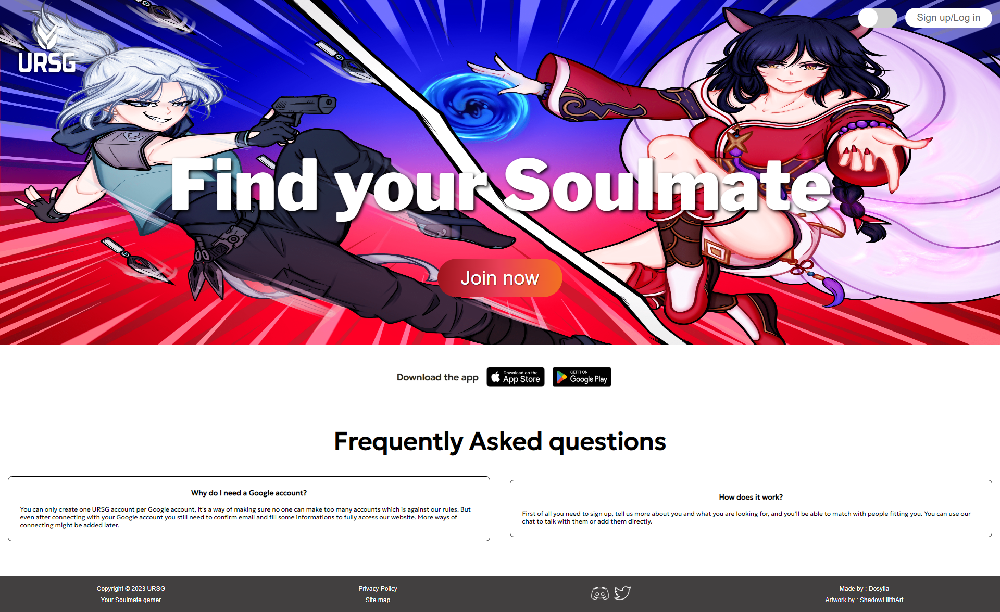
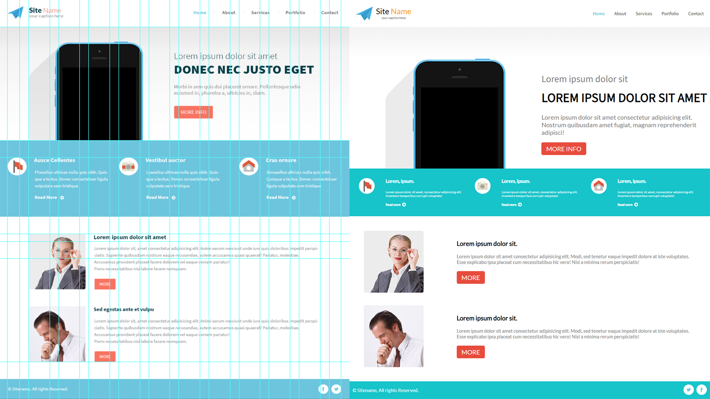

URSG - POO

First, what is this project?
It's a social website and later app meant for Valorant and League of Legends gamers to meet, become friends and play together. They can add each other as friends, talk to each other directly in the app, block people for their own safety. There is also a fully working algorithm with a swiping system to provide the best match possible for each player.
Full Website
This is my biggest project so far, with a lot of content including a form splitting into multiple directions depending on the choices, Sign up with the form and Google API, displaying of data from League of Legends accounts using Riot API, a fully working chat. And finally, a swiping system that gave me a lot of challenge.
What did I learn?
As I'm actually remaking this website fully in POO, it helped me work on few notions that I had already seen and understand them better. The POO, which seemed complicated at the beginning, but the more I used it and the more clear its advantages appeared to me. I also highly improved my Ajax skills, as it was needed to receive data from Google and send it to the database. I improved on debugging it mostly, which was a big issue before.
I fully learned how to make a better design with that project, going for something that looks a bit more modern and in its time compared to my first project. But I still tried to maintain a clear website and not let the design make it an awful user experience.
RYDC - Dynamic Ajax/PHP

First, what is this project?
This project is a website to rent luxury cars. Customers can pick a day, and then choose their model. Depending on what they pick, they can see a description of each car and then add them to their cart.
What did I learn?
I learned how to make a website fully dynamic, adjusting what the user sees with PHP/Ajax, and worked on a lot of SQL requests. I also delved deeper into local storage to add a cart for customers. This project was made with a group, so it was also an opportunity for me to learn teamwork. Design was always secondary and was done as a last-minute thing because the main focus of this project was on the back end.
Model PSD - Limited time project

First, what is this project?
This is a one-page unbranded website showcasing a product and a staff member. The goal of this project was to reproduce this model in a very limited time (1 hour) and make it look as close as possible to the original using nothing but the Photoshop file.
What did I learn?
The first thing I learned was how to analyze a model and make a quick plan for how to work with it. I studied the scales and the best way to create each element so that when I started coding, I wouldn't lose a single second and would have a clear direction. It helped me realize how important it is to have well-organized work.